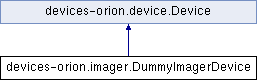

Inheritance diagram for devices-orion.imager.DummyImagerDevice:

Public Member Functions | |
| def | getHandlers |
| We control which light sources are active, as well as a set of stage motion piezos. | |
| def | takeImage |
| Take an image. | |
| def | shutdown |
| As an example, this module supports the ability to be dynamically reloaded via the depot.reloadModule() function. | |
| def | initFromOldDevice |
| Receive our old handlers, and update their callbacks to refer to us instead of to the old device. | |
 Public Member Functions inherited from devices-orion.device.Device Public Member Functions inherited from devices-orion.device.Device | |
| def | __init__ |
| def | initialize |
| Perform any necessary initialization (e.g. | |
| def | makeUI |
| Construct any special UI the Device needs. | |
| def | performSubscriptions |
| Subscribe to any events we care about. | |
| def | makeInitialPublications |
| Publish any needed information. | |
| def | finalizeInitialization |
| Do any final actions needed, now that all of the devices are set up and all initial publications and subscriptions have been made. | |
| def | getIsActive |
| Simple getter. | |
| def | initWithHandlers |
| Debugging function: re-initialize the device with the specified list of handlers. | |
Additional Inherited Members | |
| Public Attributes inherited from devices-orion.device.Device | |
| isActive | |
| Set to False to disable this device. | |
| priority | |
| Priority for initializing this device. | |
Member Function Documentation
| def devices-orion.imager.DummyImagerDevice.getHandlers | ( | self | ) |
We control which light sources are active, as well as a set of stage motion piezos.
Reimplemented from devices-orion.device.Device.
| def devices-orion.imager.DummyImagerDevice.initFromOldDevice | ( | self, | |
| oldDevice, | |||
| handlers | |||
| ) |
Receive our old handlers, and update their callbacks to refer to us instead of to the old device.
| def devices-orion.imager.DummyImagerDevice.shutdown | ( | self | ) |
As an example, this module supports the ability to be dynamically reloaded via the depot.reloadModule() function.
These two functions need to be implemented for this to work properly.
Reimplemented from devices-orion.device.Device.
| def devices-orion.imager.DummyImagerDevice.takeImage | ( | self | ) |
Take an image.
Normally we'd coordinate camera and light trigger signals at this point, but the dummy system has no hardware so we just pretend.
The documentation for this class was generated from the following file:
- devices-orion/imager.py